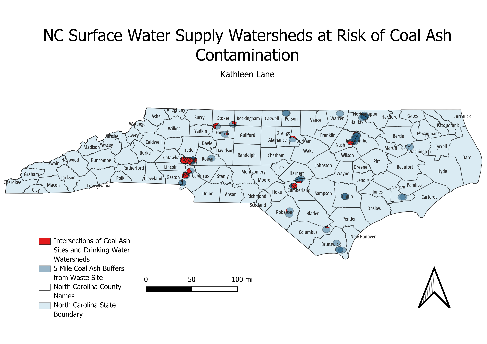

Homework 8: Geoprocessing Analysis
Kathleen Lane
Coal ash has been a persistent, harmful pollutant in the state of North Carolina. In 2013, North Carolina's Department
of Environmental Quality (NC DEQ) filed a lawsuit against Duke Energy for the improper disposal of coal ash at all 14
of their properties. Later, in 2014, a stormwater pipe broke at the Dan River Duke Energy location, spilling 39,000 tons
of coal ash into the Dan River. Coal ash contains pollutants like mercury, selenium, lead, arsenic, and many more heavy
metals that are associated with neurological disorders, heart conditions, and various cancers.
A common way that coal ash spreads is through groundwater. So, I have decided to display the intersection of NC coal ash
waste sites and the NC drinking water supply watersheds to highlight possible future coal ash contamination sites. In other words,
my map answers this question: How many drinking water sources in NC are at risk of coal ash contamination?
Methodology: First, I created a 5-mile buffer around the coal ash waste sites because 5 miles is the distance that coal ash can
travel through groundwater. Then, I created an intersection beween the 5-mile buffers and the nearby water supplies. I chose to only
display the 5-mile coal ash buffers and the at-risk watersheds (the intersection). Then, I chose to also include North Carolina
county names to reference where the at-risk watersheds are geographically.

Data used for this project
NC State Boundary Data
NC State County Data
Intersection Data: At-risk Watersheds
Buffer Data: 5-mile Buffers
NC Surface Water Supply Watersheds Geospatial Data
Coal Ash Structural Fills Geospatial Data
Sources of Coal Ash Information
Introduction to Coal Ash in NC
Coal Ash Hazards